In this first part of the RchivalTag tutorial series, we will learn how to read, merge, analyze and visualize Time-at-Depth & Time-at-Temperature frequency data.
To run this tutorial we will need RchivalTag version >= 0.1.5 and oceanmap version >= 0.13. You can find the newest versions of both packages on github
## install or load package
# install.packages("RchivalTag") # from CRAN
# library(xfun)
# install_github("rkbauer/oceanmap") # newest version from github
# install_github("rkbauer/RchivalTag") # newest version from github
library("RchivalTag")
## Package overview and version:
?RchivalTag
help(package="RchivalTag") ## list of functionsHistogram data files (#####-Histos.csv files) are a summary data product of different tag models from Wildlife Computers (WC; i.e. mk9, mk10, SPOT, SPLASH, miniPAT) that store recorded temperature and/or depth time series data in user-defined temperature and depth bins in user-specified summary intervals (4, 6, 12 or 24h).
Since this data is stored as a csv file, you might be tempted to read in the data via R’s read.table or read.csv functions:
## read example histogram data:
hist_file <- system.file("example_files/104659-Histos.csv",package="RchivalTag")
h <- read.csv(hist_file)
head(h,3) DeployID Ptt DepthSensor Source Instr HistType
1 15P1019 104659 NA Transmission MiniPAT TATLIMITS
2 15P1019 104659 NA Transmission MiniPAT TAT
3 15P1019 104659 NA Transmission MiniPAT TAT
Date Time.Offset Count BadTherm LocationQuality
1 NA NA NA NA
2 08:10:00 07-Aug-2016 NA NA NA NA
3 00:00:00 08-Aug-2016 NA NA NA NA
Latitude Longitude NumBins Sum Bin1 Bin2 Bin3 Bin4 Bin5 Bin6 Bin7
1 NA NA NA NA 10 12.0 15.0 17.0 18.0 19.0 20.0
2 NA NA 12 100 0 11.1 4.2 8.4 6.3 11.6 1.6
3 NA NA 12 100 0 4.5 0.7 0.0 0.0 0.0 0.3
Bin8 Bin9 Bin10 Bin11 Bin12 Bin13 Bin14 Bin15 Bin16 Bin17 Bin18
1 21.0 22.0 23.0 24 27 NA NA NA NA NA NA
2 31.6 25.3 0.0 0 NA NA NA NA NA NA NA
3 3.8 85.1 5.6 0 NA NA NA NA NA NA NA
Bin19 Bin20 Bin21 Bin22 Bin23 Bin24 Bin25 Bin26 Bin27 Bin28 Bin29
1 NA NA NA NA NA NA NA NA NA NA NA
2 NA NA NA NA NA NA NA NA NA NA NA
3 NA NA NA NA NA NA NA NA NA NA NA
Bin30 Bin31 Bin32 Bin33 Bin34 Bin35 Bin36 Bin37 Bin38 Bin39 Bin40
1 NA NA NA NA NA NA NA NA NA NA NA
2 NA NA NA NA NA NA NA NA NA NA NA
3 NA NA NA NA NA NA NA NA NA NA NA
Bin41 Bin42 Bin43 Bin44 Bin45 Bin46 Bin47 Bin48 Bin49 Bin50 Bin51
1 NA NA NA NA NA NA NA NA NA NA NA
2 NA NA NA NA NA NA NA NA NA NA NA
3 NA NA NA NA NA NA NA NA NA NA NA
Bin52 Bin53 Bin54 Bin55 Bin56 Bin57 Bin58 Bin59 Bin60 Bin61 Bin62
1 NA NA NA NA NA NA NA NA NA NA NA
2 NA NA NA NA NA NA NA NA NA NA NA
3 NA NA NA NA NA NA NA NA NA NA NA
Bin63 Bin64 Bin65 Bin66 Bin67 Bin68 Bin69 Bin70 Bin71 Bin72
1 NA NA NA NA NA NA NA NA NA NA
2 NA NA NA NA NA NA NA NA NA NA
3 NA NA NA NA NA NA NA NA NA NAI would not recommend this for data processing but it’s actually a good way to understand the formatting of WC histogram files. As you can see, each row contains some general Information about the DeployID, Ptt, Source, Tag Type (Instr). We can also see the Date column that holds the starting point of each histogram data set in UTC. In our case the tag was probably deployed shortly before “08:10:00 07-Aug-2016”, that’s when the tag started to record data. The remaining columns are likewise interesting. NumBins gives the number of user defined bins, Bin1-72 holds the actual binned histogram data. We can see that only Bin1-Bin12 have records in the first row and that these records correspond to the TATLIMITS. The TATLIMITS are the Time-AT-Temperature LIMITS, bin breaks or ticks. In the second row, we have the actual histogram data stored in the first 11 Bins. Bin 12 is empty since it is the last bin break. We will soon learn how to plot this data. If you would open the file in MS excel or run the tail function in R, you would see that the Time-AT-Depth (TAD) histogram data is stored in the same file.
Now that we understand the formatting of the raw histogram file better, let’s see how to import it properly for later operations and figures.
RchivalTag has its own functions to read, process and plot histogram data. We will start with reading a histogram data file that comes with the package. (Later we will also see how to generate histogram data from depth-temperature time series data)
hist_dat_1 <- read_histos(hist_file)
str(hist_dat_1,3)List of 2
$ TAD:List of 1
..$ DeployID.15P1019_Ptt.104659:List of 2
.. ..$ bin_breaks: num [1:12] 0 2 5 10 20 50 100 200 300 400 ...
.. ..$ df :'data.frame': 15 obs. of 23 variables:
$ TAT:List of 1
..$ DeployID.15P1019_Ptt.104659:List of 2
.. ..$ bin_breaks: num [1:14] 0 10 12 15 17 18 19 20 21 22 ...
.. ..$ df :'data.frame': 15 obs. of 25 variables:# head(hist_dat_1$TAD[[1]]$df)
# tail(hist_dat_1$TAD[[1]]$df)
# str(hist_dat_1,2)We can see that the original dataframe was split into a list that contains two sublists:
$ TAD (Time At Depth)
$ TAT (Time At Temperature)
Each sublist contains another* list which is named after the different specifiers of the tag. In our case: DeployID.15P1019_Ptt.104659
(Later we will learn how to combine histogram data from multiple tags. In such cases, the number of lists within the TAD and TAT sublists can increase further).
We can see that the DeployID.15P1019_Ptt.104659-list contains two data objects:
1. bin_breaks (a numeric vector that contains the bin breaks of the TAD or TAT histogram data)
2. df (a data frame that holds all the TAD or TAT histogram data)
hist_dat_1$TAD$DeployID.15P1019_Ptt.104659$bin_breaks [1] 0 2 5 10 20 50 100 200 300 400 600 2000head(hist_dat_1$TAD$DeployID.15P1019_Ptt.104659$df,3) DeployID Ptt Sum datetime date Bin1 Bin2 Bin3
18 15P1019 104659 100 2016-08-07 08:10:00 2016-08-07 31.0 26.3 19.5
19 15P1019 104659 100 2016-08-08 00:00:00 2016-08-08 54.8 26.0 13.5
20 15P1019 104659 100 2016-08-09 00:00:00 2016-08-09 46.9 37.8 14.9
Bin4 Bin5 Bin6 Bin7 Bin8 Bin9 Bin10 Bin11 Bin12 avg
18 14.2 2.1 2.6 1.1 3.2 0.0 0 0 NA 17.139351
19 2.8 0.7 1.0 0.7 0.0 0.3 0 0 NA 5.961014
20 0.0 0.3 0.0 0.0 0.0 0.0 0 0 NA 3.014379
SD nrec duration tstep nperc_dat
18 46.580815 15.83333 24 15.83333 66
19 23.693954 24.00000 24 24.00000 100
20 2.823874 24.00000 24 24.00000 100Interestingly, the data stops now at Bin12 and includes some new columns:
Since our tag started recording at 8am the first day holds roughly 66% of the data. In general, we don’t like to include days with a lot of gaps in our histograms. This will become important when we construct histogram data from time series data since the latter can be quite “gappy”.
You might want to cut off the first and last day(s) of the tag data to remove any influence of tagging behavior (first days) or when the tag has popped off the animal (last days). To do so, you would need to use a meta file, that you should create separately via excel to specify and comment all the tag deployments. Once this is done, you can run the following code to cut off the first 3 and the last 2 deployment days:
cut_start <- 3; cut_end <- 2
library(dplyr)
## define or read meta file (each row corresponds to 1 animal)
meta <- data.frame(DeployID="15P1019",
Ptt="104659",
dep.date=as.Date("2016-08-07"),
pop.date=as.Date("2016-08-21"))
for(i in 1:length(hist_dat_1$TAD)){
dat <- hist_dat_1$TAD[[i]]$df
## filter the meta data, assuming that the DeployID is unique across animals
mmeta <- meta %>% filter(DeployID == dat$DeployID[1])
dates <- c(mmeta$dep.date:(mmeta$dep.date+cut_start),
mmeta$pop.date:(mmeta$pop.date-cut_end))
dat %>% filter(!(date %in% as.Date(dates,origin="1970-01-01")))
hist_dat_1$TAD[[i]]$df <- dat
}Now let’s plot the TAD data:
hist_tad(hist_dat_1)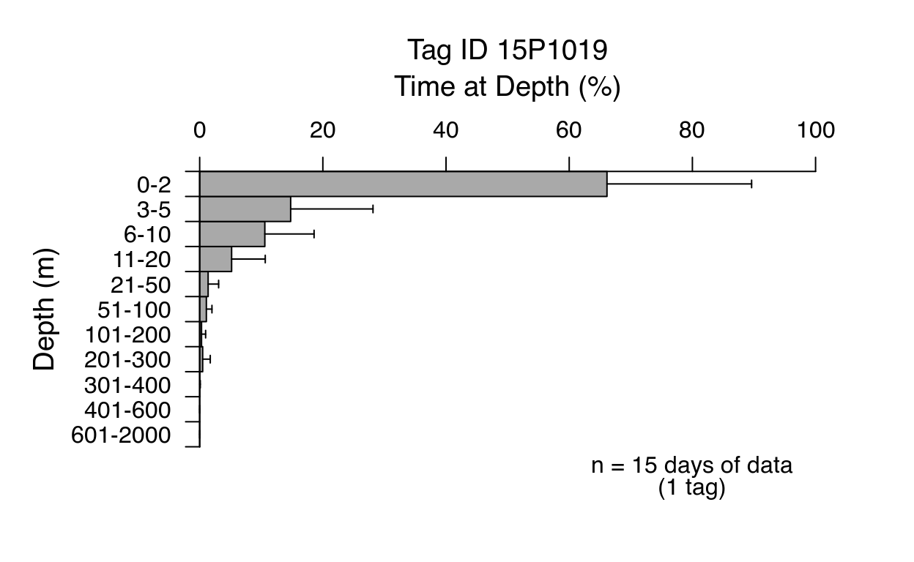
Nice, we can see that our tag had 15 days of 24h data and that the histogram is based on 1 tag. This specific tag spent quite some time at the surface. But attention! MiniPATs often continue to record once they poped-up, which means that this could be an artifact from the time the tag was actually floating at the surface.
We will deal with this issue in a moment. For now, let’s just do another plot with the TAT data:
par(mfrow=c(1,2)) ## splits the plotting window in 1 row and two columns
hist_tad(hist_dat_1)
hist_tat(hist_dat_1)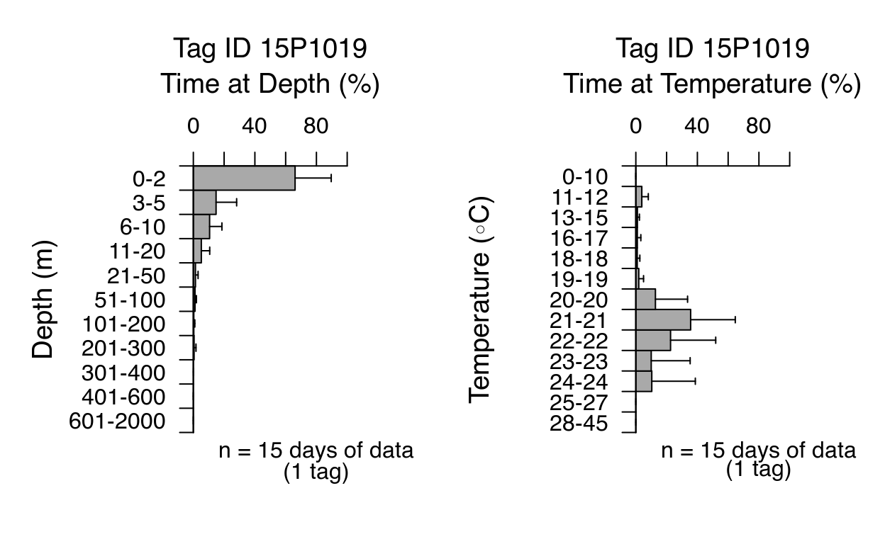
The hist_tad & hist_tat come with a bunch of arguments to edit the plot. Some of them you might know from other plotting functions.
args(hist_tad)function (df, bin_breaks = NULL, bin_prefix = "Bin", select_id,
select_from = "Ptt", aggregate_by = "Ptt", date, min_perc,
main, xlab = "Time at Depth (%)", ylab = "Depth (m)", labeling = TRUE,
xlim = c(0, 100), adaptive.xlim = FALSE, split_by = NULL,
split_levels, xlab2 = split_levels, ylab.side = 2, ylab.line,
ylab.font = 1, xlab.side = 3, xlab.line = 2.5, xlab.font = 1,
xlab2.side = 1, xlab2.line = 1, xlab2.font = 2, main.side = 3,
main.line = 3.8, main.font = 1, col = c("darkgrey", "white"),
xticks, ylabels, do_mid.ticks = TRUE, yaxis.pos = 0, mars,
space = 0, plot_sd = TRUE, plot_se, plot_nrec = TRUE, plot_ntags = TRUE,
cex = 1.2, cex.main = cex, cex.lab = cex, cex.inf = cex.axis,
cex.axis = 1, return.sm = FALSE, subplot = FALSE, inside = FALSE,
Type = "TAD")
NULLFor example we could easily
hist_tad(hist_dat_1, space=1, plot_se = T, col="darkblue") 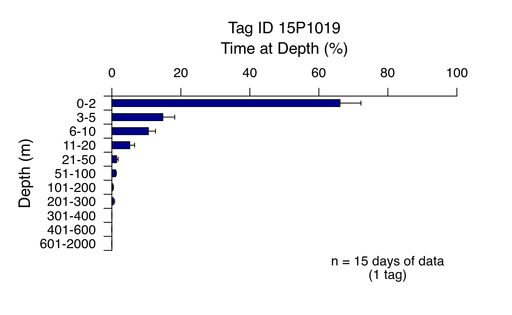
I will introduce further arguments in the remaining examples of this tutorial.
The bin breaks of your Time-at-Depth and Time-at_Temperature histogram data were fixed during the programming stage. At this point, we can not change them (except if we have access to the corresponding time series data; Please see later examples). To highlight the importance of the bin breaks selection for the interpretation of our histogram data, let’s load another test set:
hist_dat_2 <- read_histos(system.file("example_files/104659b-Histos.csv",
package="RchivalTag"))
str(hist_dat_2,2)List of 2
$ TAD:List of 1
..$ DeployID.15P1019b_Ptt.104659b:List of 2
$ TAT:List of 1
..$ DeployID.15P1019b_Ptt.104659b:List of 2This histogram data is actually from the same tag, but has different bin breaks. I generated this data to make you aware of the importance of your bin breaks when it comes to the interpretation of your results/plots.
hist_dat_2$TAD$DeployID.15P1019b_Ptt.104659b$bin_breaks # new data [1] 0 5 10 20 50 100 150 400 600 2000hist_dat_1$TAD$DeployID.15P1019_Ptt.104659$bin_breaks # former data [1] 0 2 5 10 20 50 100 200 300 400 600 2000The new TAD data has 2 bin breaks less (the 5 and 300 m bin breaks). Let’s plot it next to our former data set:
A tagging study generally consists of more than one individual in order to get an idea of common behavior types of a given species/population. We might therefore be interested in combining and merging the data of several individuals. In case of the our histogram data, the two datasets above are a good starting point for such an analysis.
Since both data sets are basically a list, the function combine_histos just combines the two lists.
hist_dat_combined <- combine_histos(hist_dat_1, hist_dat_2)
str(hist_dat_combined,2)List of 2
$ TAD:List of 2
..$ DeployID.15P1019_Ptt.104659 :List of 2
..$ DeployID.15P1019b_Ptt.104659b:List of 2
$ TAT:List of 2
..$ DeployID.15P1019_Ptt.104659 :List of 2
..$ DeployID.15P1019b_Ptt.104659b:List of 2data from several IDs found (that will be plotted seperately): DeployID.15P1019_Ptt.104659 DeployID.15P1019b_Ptt.104659b hist_tat(hist_dat_combined, plot_ntags=F)data from several IDs found (that will be plotted seperately): DeployID.15P1019_Ptt.104659 DeployID.15P1019b_Ptt.104659b 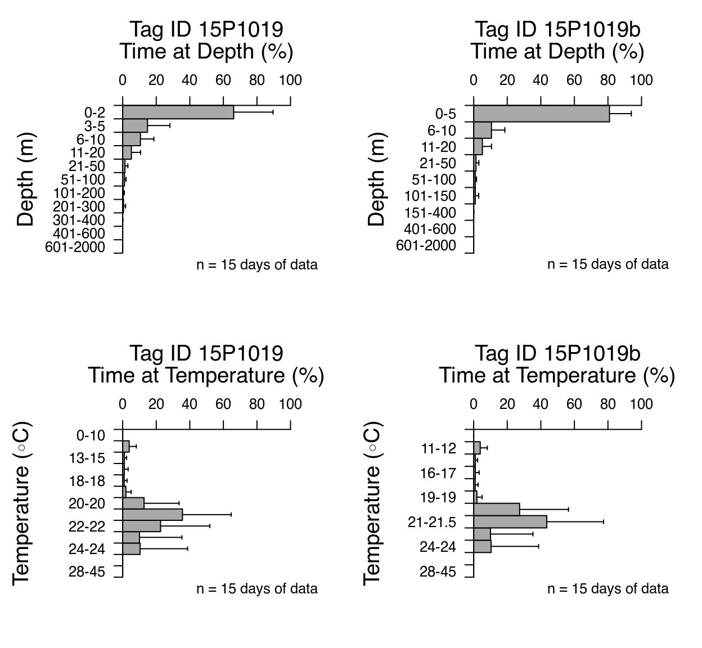
But how can we can produce one histogram figure of the entire merged data set?
For this we need to merge the data with the function merge_histos.
hist_dat_merged <- merge_histos(hist_dat_combined,force_merge = FALSE)
merging TAD data:
Found the following unique bin breaks for TAD-data:
bin_breaks n_tags
1 0; 2; 5; 10; 20; 50; 100; 200; 300; 400; 600; 5000 1
2 0; 5; 10; 20; 50; 100; 150; 400; 600; 5000 1
merging TAT data:
Found the following unique bin breaks for TAT-data:
bin_breaks n_tags
1 0; 10; 12; 15; 17; 18; 19; 20; 21; 22; 23; 24; 27; 45 1
2 0; 10; 12; 15; 17; 18; 19; 20; 21.5; 23; 24; 27; 45 1str(hist_dat_merged,2)List of 2
$ TAD:List of 2
..$ group1:List of 2
..$ group2:List of 2
$ TAT:List of 2
..$ group1:List of 2
..$ group2:List of 2data from several IDs found (that will be plotted seperately): group1 group2 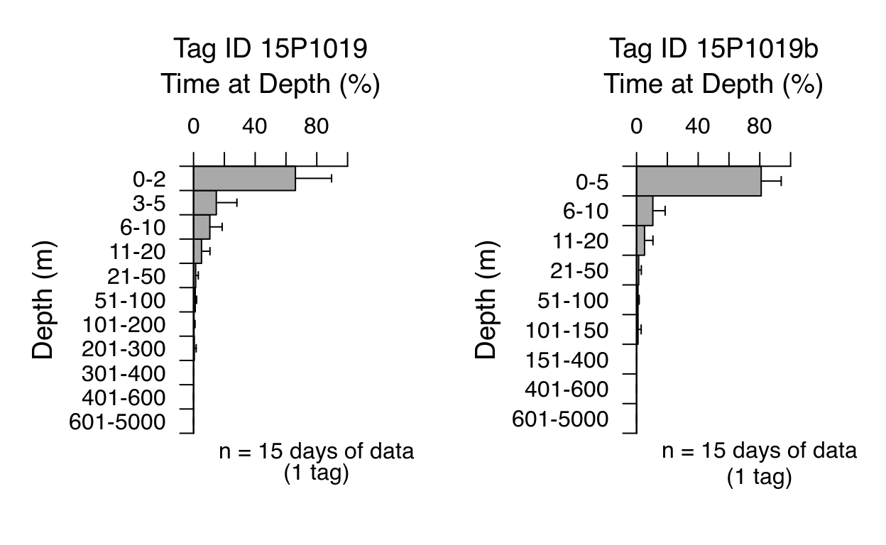
This is not exactly what I promised, since we still get 2 figures from the data.
Note that in case of individuals with different bin breaks will be assigned to different groups. To avoid thus, we need to turn on the flag force_merge=TRUE. This option looks for common bin breaks of the different individuals and recombines the data accordingly, dropping non-shared bin breaks.
hist_dat_merged <- merge_histos(hist_dat_combined,force_merge = TRUE)
merging TAD data:
Found the following unique bin breaks for TAD-data:
bin_breaks n_tags
1 0; 2; 5; 10; 20; 50; 100; 200; 300; 400; 600; 5000 1
2 0; 5; 10; 20; 50; 100; 150; 400; 600; 5000 1
Forcing merge on common TAD bin_breaks:
0 5 10 20 50 100 400 600 5000
merging TAT data:
Found the following unique bin breaks for TAT-data:
bin_breaks n_tags
1 0; 10; 12; 15; 17; 18; 19; 20; 21; 22; 23; 24; 27; 45 1
2 0; 10; 12; 15; 17; 18; 19; 20; 21.5; 23; 24; 27; 45 1
Forcing merge on common TAT bin_breaks:
0 10 12 15 17 18 19 20 23 24 27 45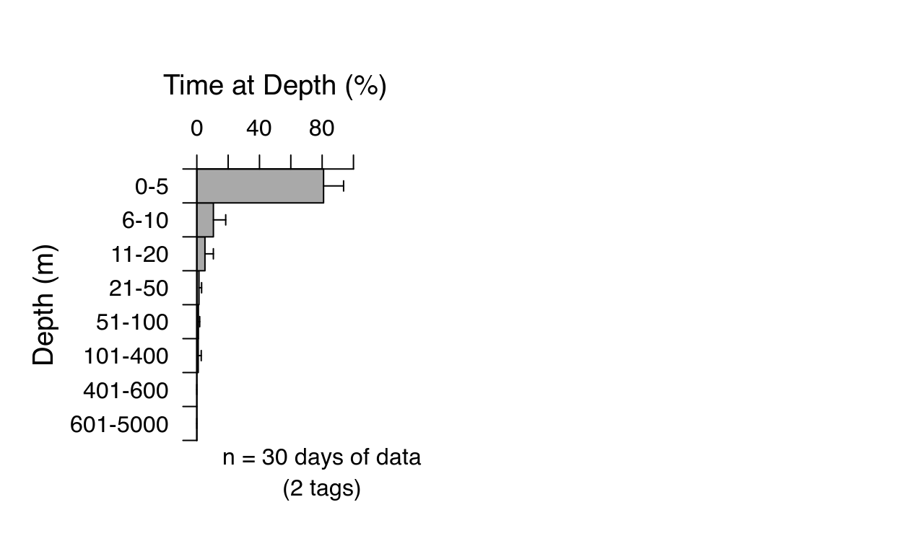
Note also that it is still possible to select a specific tag from a merged list. However, bin break changes (e.g. via force_merge = TRUE) in the merged list are permanent!
hist_tad(hist_dat_merged) # of all tags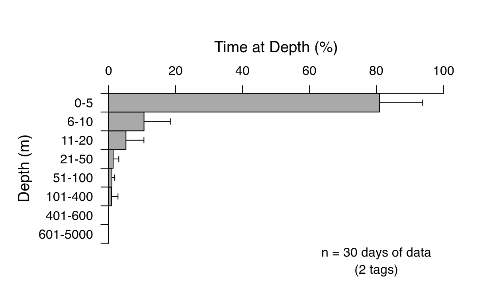
unique(hist_dat_merged$TAD$merged$df$DeployID) ## list unique tags in merged list[1] "15P1019" "15P1019b"hist_tad(hist_dat_merged, select_id = "15P1019b", select_from = 'DeployID') # of one tag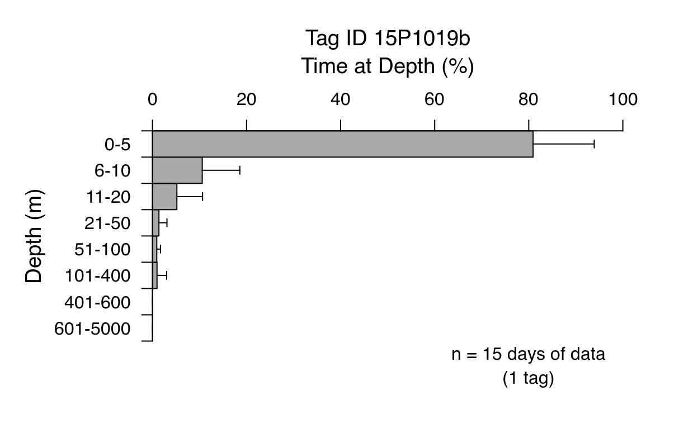
You might like to unmerge your data so that the histogram data is again separated by individual again (similar to the result of a combine_histos call). In this case, we can apply the unmerge_histos function. Again potential prior bin break changes (e.g. via force_merge = TRUE) are permanent and therefore persist in the unmerged data set:
str(hist_dat_merged,2)List of 2
$ TAD:List of 1
..$ merged:List of 2
$ TAT:List of 1
..$ merged:List of 2hist_dat_merged$TAD[[1]]$bin_breaks[1] 0 5 10 20 50 100 400 600 5000
hists_unmerged <- unmerge_histos(hist_dat_merged)
str(hists_unmerged,2)List of 2
$ TAD:List of 2
..$ DeployID.15P1019_Ptt.104659 :List of 2
..$ DeployID.15P1019b_Ptt.104659b:List of 2
$ TAT:List of 2
..$ DeployID.15P1019_Ptt.104659 :List of 2
..$ DeployID.15P1019b_Ptt.104659b:List of 2hists_unmerged$TAD[[1]]$bin_breaks[1] 0 5 10 20 50 100 400 600 5000hists_unmerged$TAD[[2]]$bin_breaks[1] 0 5 10 20 50 100 400 600 5000Combined (not merged) 24h histogram data sets can also be used to illustrate the daily data coverage.
For this purpose, RchivalTag comes with a function called plot_data_coverage, which can also be applied to other archival tagging data (i.e. light locations as well as time series data). However, the required input format of other valid data products is different and will introduced later. For now, let’s combine our previous data that we like to analyze:
# Tag 1
options(warn=0)
ts_file <- system.file("example_files/104659-Series.csv",package="RchivalTag")
ts_df <- read_TS(ts_file)
tad_breaks <- c(0, 2, 5, 10, 20, 50, 100, 200, 300, 400, 600, 2000)
tat_breaks <- c(10,12,15,17,18,19,20,21,22,23,24,27)
hists_ts <- ts2histos(ts_df, tad_breaks = tad_breaks)
# Tag 2 (same as Tag 3)
hist_dat_2 <- read_histos(system.file("example_files/104659b-Histos.csv",package="RchivalTag"))
# Tag 3
hist_file <- system.file("example_files/67851-12h-Histos.csv",package="RchivalTag")
hist_24h <- read_histos(hist_file,min_perc=75)
hist_dat_combined <- combine_histos(hist_dat_2, hists_ts)
hist_dat_combined <- combine_histos(hist_dat_combined, hist_24h)We also need to supply a meta file on the tag deployments (i.e. Tag Ptt and DeployID as well as the deployment start and end). In this example, we obtain this information from the histogram data. However, please note that it is more accurate to crossvalidate the deployment start and end dates via time series data, ARGOS positions etc and to supply the validated information as a csv file.
meta <- c()
for(n in names(hist_dat_combined$TAD)){
add <- data.frame(DeployID=gsub("_Ptt","",strsplit(n,"\\.")[[1]][2]),
Ptt=strsplit(n,"\\.")[[1]][3])
add$dep.date <- hist_dat_combined$TAD[[n]]$df$date[1]
add$pop.date <- tail(hist_dat_combined$TAD[[n]]$df$date,1)
meta <- rbind(meta,add)
}
meta DeployID Ptt dep.date pop.date
1 15P1019b 104659b 2016-08-07 2016-08-21
2 15P1019 104659 2016-08-07 2016-08-21
3 67851 67851 2012-02-02 2012-02-21Deployment start and end dates need to be termed dep.date and pop.date, respectively. At least one more column to identify the tag (e.g. via its Serial or DeployID) are required. This column as well as other columns of the meta file can be added to the plot via the fields argument of the plot_data_coverage function.
plot_data_coverage(hist_dat_combined,type="tad",type2="nperc_dat",na.omit = F,meta=meta,
Identifier = "DeployID",fields=c("DeployID","Ptt"))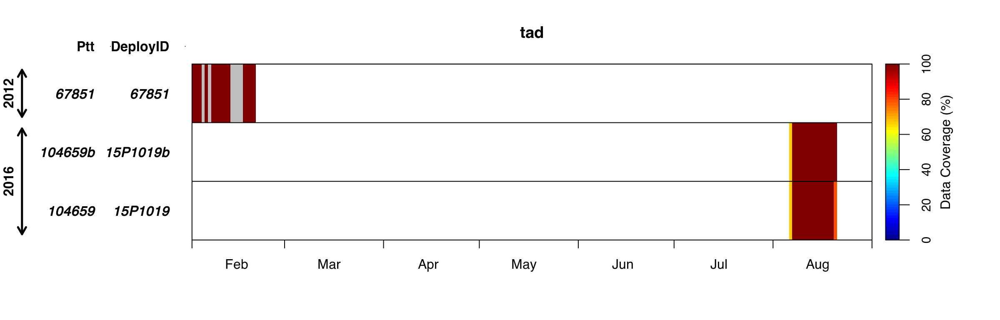
As mentioned earlier, the summary period of the histogram data (and other summary data products for WC tags) can be defined during the tag programming stage as 6h, 12h, 24h. However, the selection of a higher resolution, also increases the amount of data that needs to be transmitted, which is generally limited by the battery capacity of the tag and/or the satellite coverage at its transmission location. Especially when you select longer deployment periods and several data products, this could lead to very gappy data.
Moreover, the timing of the 6h and 12h periods is often not related to the timing of sunrise and sunset (but to the UTC time), which makes them difficult to interpret. I would therefore not recommend to select such data. Please note that it is actually possible to estimate and plot day-night histograms from time series data. At the end of this tutorial we will learn how to do this
The current version of RchivalTag merges the 6h and 12h histogram data to 24h periods. (Please recall: The column nperc_dat indicates the data coverage in percent.)
hist_file <- system.file("example_files/67851-12h-Histos.csv",package="RchivalTag")
hist_24h <- read_histos(hist_file,min_perc=75)
head(hist_24h$TAD$DeployID.67851_Ptt.67851$df,3) DeployID Ptt Sum datetime date Bin1 Bin2 Bin3 Bin4 Bin5
38 67851 67851 100 2012-02-02 2012-02-02 89.15 8.75 1.10 0.8 0.15
40 67851 67851 100 2012-02-03 2012-02-03 91.05 6.20 1.50 1.0 0.20
42 67851 67851 100 2012-02-04 2012-02-04 83.55 5.15 6.75 4.4 0.20
Bin6 Bin7 Bin8 Bin9 Bin10 Bin11 Bin12 Bin13 Bin14 avg
38 0 0 0 0 0 0 0 0 NA 6.925047
40 0 0 0 0 0 0 0 0 NA 7.008144
42 0 0 0 0 0 0 0 0 NA 10.849802
SD nperc_dat nrec duration tstep
38 8.590313 100 24 24 24
40 9.653886 100 24 24 24
42 16.595609 100 24 24 24However, it is possible to avoid this merge, and also to plot 12h histogram data side by side (back to back):
hist_12h <- read_histos(hist_file,min_perc=0)
head(hist_12h$TAD$DeployID.67851_Ptt.67851$df,3) DeployID Ptt Sum datetime date Bin1 Bin2 Bin3
36 67851 67851 100 2012-02-01 08:10:00 2012-02-01 80.0 17.5 2.2
37 67851 67851 100 2012-02-01 12:00:00 2012-02-01 96.3 2.5 0.8
38 67851 67851 100 2012-02-02 00:00:00 2012-02-02 85.8 11.7 1.4
Bin4 Bin5 Bin6 Bin7 Bin8 Bin9 Bin10 Bin11 Bin12 Bin13 Bin14
36 0.3 0.0 0 0 0 0 0 0 0 0 NA
37 0.4 0.0 0 0 0 0 0 0 0 0 NA
38 0.8 0.3 0 0 0 0 0 0 0 0 NA
avg SD nrec duration tstep nperc_dat
36 7.613095 6.686268 3.833333 12 3.833333 16
37 5.764131 5.330528 12.000000 12 12.000000 50
38 7.491567 9.934819 12.000000 12 12.000000 50df <- hist_12h$TAD$DeployID.67851_Ptt.67851$df
df <- df[which(df$tstep == 12),]
df$tperiod <- "0:00 - 12:00"
df$tperiod[grep("12:00:00",df$datetime)] <- "12:00 - 24:00"
tad_breaks <- hist_12h$TAD$DeployID.67851_Ptt.67851$bin_breaks
df$nperc_dat <- 100 # necessary to avoid error due to low data availability
hist_tad(df, bin_breaks = tad_breaks, split_by = "tperiod")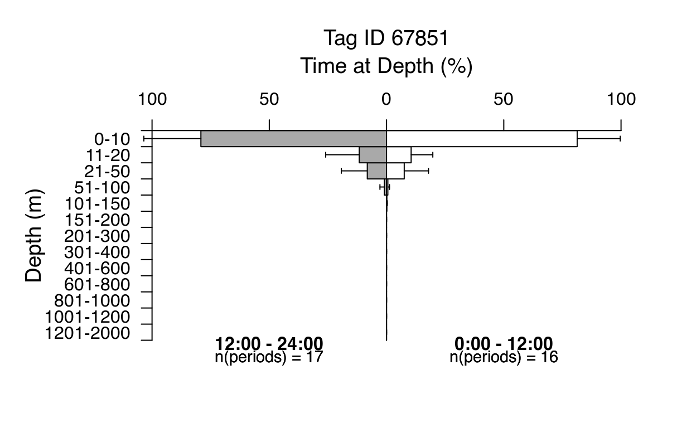
To speed up the plotting and later data manipulation, we could also reassign the edited data frame to the histogram list:
hist_12h$TAD$DeployID.67851_Ptt.67851$df <- df
#hist_tad(hist_12h, split_by = "tperiod")As mentioned earlier, it is possible to generate Time-at-Depth and Time-at-Temperature from (depth/temperature) time series data.
To do so, we first need to load our data. RchivalTag has its own function for that. This function completes time series gaps with NA values to account for the data availability. We can see this immediately, when we check the first rows of our data:
Since the tag has been deployed after midnight, the first depth and temperature records are all NAs.
ts_file <- system.file("example_files/104659-Series.csv",package="RchivalTag")
ts_df <- read_TS(ts_file)
head(ts_df,3) DeployID Ptt date datetime DepthSensor Source
1 15P1019 104659 2016-08-07 2016-08-07 00:00:00 NA <NA>
2 15P1019 104659 2016-08-07 2016-08-07 00:05:00 NA <NA>
3 15P1019 104659 2016-08-07 2016-08-07 00:10:00 NA <NA>
Instr Depth DRange Temperature TRange
1 <NA> NA NA NA NA
2 <NA> NA NA NA NA
3 <NA> NA NA NA NALet’s transform this to a 24h histogram:
tad_breaks <- c(0, 2, 5, 10, 20, 50, 100, 200, 300, 400, 600, 2000)
tat_breaks <- c(10,12,15,17,18,19,20,21,22,23,24,27)
hists_ts <- ts2histos(ts_df, tad_breaks = tad_breaks)
hist_tad(hists_ts) # plot time-at-depth data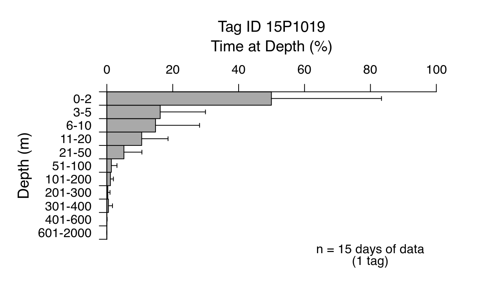
Alternatively, we can directly plot the data from the time series data frame:
hist_tat(ts_df, bin_breaks = tat_breaks) # plot time-at-temperature data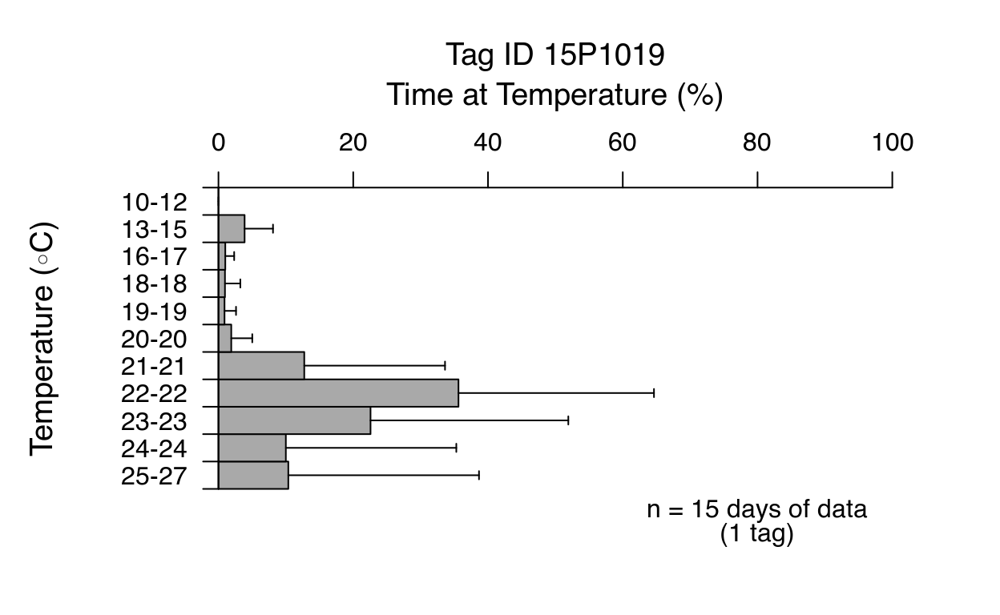
ts_df$Lat <- 4; ts_df$Lon <- 42.5 ## required geolocations to estimate daytime
ts_df2 <- classify_DayTime(get_DayTimeLimits(ts_df)) # estimate daytime
head(ts_df2,3) DeployID Ptt date datetime DepthSensor Source
1 15P1019 104659 2016-08-07 2016-08-07 00:00:00 NA <NA>
2 15P1019 104659 2016-08-07 2016-08-07 00:05:00 NA <NA>
3 15P1019 104659 2016-08-07 2016-08-07 00:10:00 NA <NA>
Instr Depth DRange Temperature TRange Lat Lon sunrise
1 <NA> NA NA NA NA 4 42.5 2016-08-07 03:07:35
2 <NA> NA NA NA NA 4 42.5 2016-08-07 03:07:35
3 <NA> NA NA NA NA 4 42.5 2016-08-07 03:07:35
sunset dawn.naut dawn.ast
1 2016-08-07 15:23:49 2016-08-07 02:20:46 2016-08-07 01:55:28
2 2016-08-07 15:23:49 2016-08-07 02:20:46 2016-08-07 01:55:28
3 2016-08-07 15:23:49 2016-08-07 02:20:46 2016-08-07 01:55:28
dusk.naut dusk.ast daytime daytime.long
1 2016-08-07 16:10:36 2016-08-07 16:35:53 Night Night
2 2016-08-07 16:10:36 2016-08-07 16:35:53 Night Night
3 2016-08-07 16:10:36 2016-08-07 16:35:53 Night Night
hists_ts2 <- ts2histos(ts_df2, tad_breaks = tad_breaks, split_by = "daytime")
hist_tad(hists_ts2,space=1)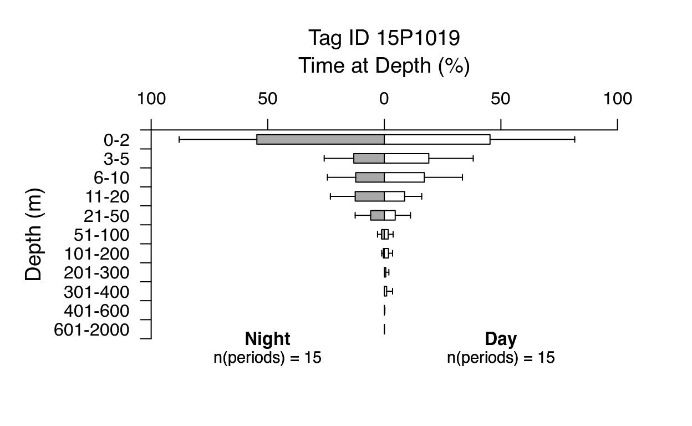
We can also do this conversion from within the hist_tad/hist_tat call.
hist_tat(ts_df2, bin_breaks = tat_breaks, split_by = "daytime", do_mid.ticks = FALSE)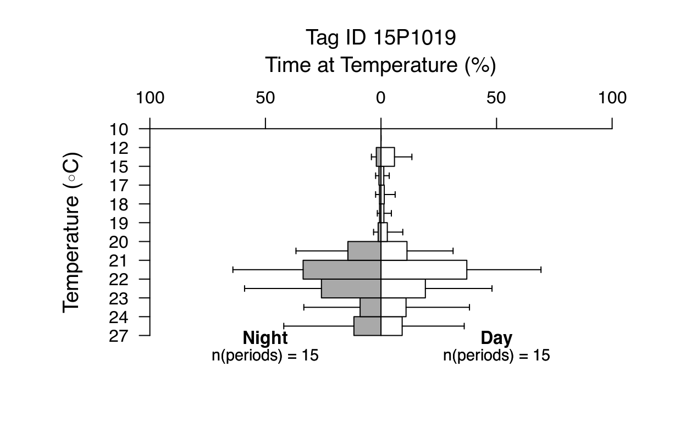
Since we can convert time series data to histogram data and even split it into day-night periods, the selection of histogram files for transmission becomes obsolete. At the same time, we can save significant battery capacities and thus improve the transmission success of other data products, including time series data. For long deployments, WC also offers to define a duty cycle by which the data gets transmitted (e.g. 3 days of data, 2 days of gaps) to save battery and thus transmission capacities. Still, in some cases it might be beneficial to select histogram data over time series data for transmission (e.g. requires less ARGOS messages and thus less battery consuming, better coverage at long deployments, especially in areas of poor satellite coverage). I will give some further recommendation on how to program your tag in the next parts of this tutorial.
Please bear this in mind, when you program your tag.
For attribution, please cite this work as
Bauer (2020, Oct. 25). Marine Biologging & Data Science | Blog: RchivalTag Tutorial | Part 1 - Time-at-Depth & Time-at-Temperature Histograms. Retrieved from https://rkbauer.github.io/oceantags/posts/RchivalTag_Tutorials_Part1_Histograms/
BibTeX citation
@misc{bauer2020rchivaltag,
author = {Bauer, Robert K.},
title = {Marine Biologging & Data Science | Blog: RchivalTag Tutorial | Part 1 - Time-at-Depth & Time-at-Temperature Histograms},
url = {https://rkbauer.github.io/oceantags/posts/RchivalTag_Tutorials_Part1_Histograms/},
year = {2020}
}